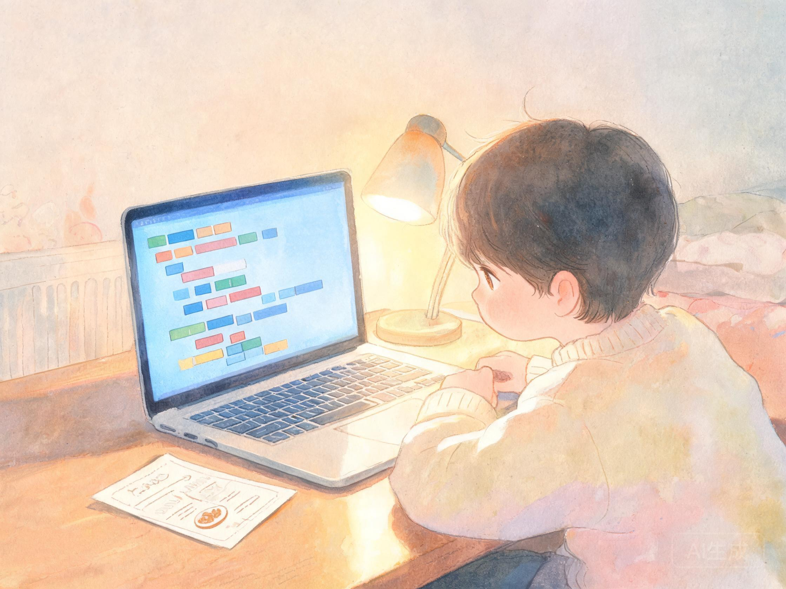

写代码之前
从没碰过代码？就从这一页开始。不记笔记、不用背，看懂比喻、敢点「运行」，你就已经入门了。

编程，就是给计算机写菜谱
计算机跑得飞快、超级听话，但它只看得懂写清楚的步骤。把步骤一条条写下来，就是「程序」；写程序的过程，就叫「编程」——像给一位认真过头的小厨师写菜谱：写「放点盐」它会懵，写「放 3 克盐」它立刻照办。
我们用的语言叫 Python（读作「派森」），全世界入门人数最多，读起来最像人话。学它你只需要：认识几个英文单词、会打字、敢点「运行」按钮。学完这页，去第 1 课写下你人生第一行真代码！
代码写在哪儿
下面那个黑色小窗就是「运行器」：上半是代码区（像记事本，可以直接打字改），下半是输出屏（程序说话的地方）。
代码区 → 输出屏
怎么让它跑
点「运行代码」按钮，计算机就从头到尾一行行执行，把 print() 的话打到屏幕上。改完随时再点，跑多少次都行。
print("你好")
看到 TODO 就动手
课堂任务里标着 TODO 的行，就是留给你的空位：照着任务提示把那一点改掉，其余行别动。改坏了点「还原」一键复原。
x = "?" # TODO：改成 5
报错不可怕
红字报错不是批评你，是 Python 在给你指路：三步读懂——①看第一行白话提示 ②找「第几行」③回去改好再跑。真正的程序员每天都在报错。
第 2 行：少了个冒号 :
第 0 个任务 · 打个招唿（不会失败）
先什么都不改，直接点「运行代码」看结果；然后把引号里的字改成你的名字，再跑一次。这就是编程的全部手感。
点一下，看它说话
print() 是「打印到屏幕」。引号里的字会原样出现在下方输出屏——改一个字，它就听你的。
这一题没有目标，玩就是了接下来：第 1 课 变量与数据类型 → 第 2 课 条件与分支 → 第 3 课 循环与函数 → 第 4 课 列表与遍历 → 第 5 课 字典与字符串 → 第 6 课 while 与猜数字 → 第 7 课 综合项目 → 挑战测验 + 代码谜题。每课都是「先看懂，再亲手改」，跟着走就行。
我第一次跑代码时把 print 打成了 prnt，屏幕立刻红了——看懂提示改过来就好。报错是老师，不是扣分。